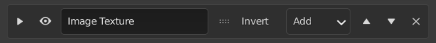
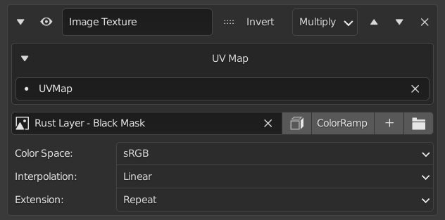

Masks#
The masks tab has panels that allow you to set masks and manipulate the mask stacks on each layer.
Mask Control Bar#
The properties on this panel are explained from the left to right.

Expand#
A downward and right arrow will show when the panel is opened and closed respectively. This operator allows you to expand and hide the mask's settings.
Visibility#
This will toggle whether the mask will affect the layer or not.
Mask Name#
A text box to set a name to easily identify the mask.
Invert#
This will allow you to invert the effect of the mask.
Blend Mode#
This will set how the mask blends with the masks below it.
Move Up#
This allows you to move the mask up one level.
Move Down#
This allows you to move the mask down one level.
Delete#
This will delete the mask.
Mask Settings#
